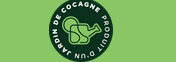

Qui suis-je rapidement
Je m'appelle Gregory Wittmann, sympathique développeur web
Je maîtrise plusieurs languages informatiques.
J'ai eu des expériences avec les framewrok Symfony et React et d'autres technologies.
Mon parcours en bref
Diplômé en BUT Informatique, je suis passionné par le développement d'applications web et mobiles. Avec une expérience en React Native, Symfony, Django, et d'autres technologies, je crée des solutions numériques efficaces et optimisées. Actuellement à la recherche de nouvelles opportunités de développement en Alsace.
Si vous êtes intéressez par mon profil, jetez un oeil à mon CV.
Volets sur mes projets universitaires
Site web de karting
Projet universitaire avec comme objectif de créer un site web pour une association sportive (fictive). Réalisé en duo et avec l'utilisation d'aucuns framework. Ce site devait permettre aux utilisateurs de pouvoir s'abonner, de participer aux compétitions et d'accéder à d'autres fonctionnalités.
 En savoir plus
En savoir plus
Les Jardins de Cocagne
Projet universitaire réalisé en collaboration avec Adrien Aubert durant la 3e année. Ce projet était de créer un site web pour une association de réinsertion professionnelle qui réalise des paniers de légumes et de fruits livrés dans des points relais.
 En savoir plus
En savoir plus
Les Jardins de Cocagne (version mobile)
Projet universitaire dans la continuité des Jardins de Cocagne toujours en collaboration avec Adrien Aubert durant la dernière moitié de la 3e année. Ce projet avait pour but de permettre de gérer la livraison des paniers dans les points relais et d'autres choses.
 En savoir plus